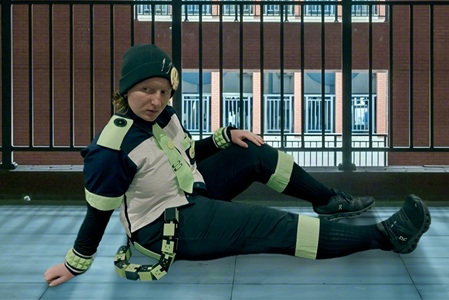
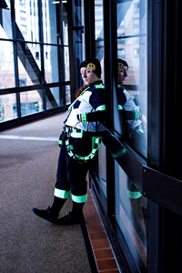
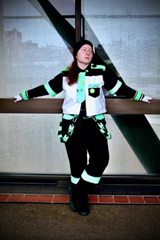

The media associated with this cosplay is intended for adults only. There is no such content on this page, but I do not recommend engaging further if you are under the age of 18.
Noiz
| Origin | DRAMAtical Murder (Game) |
|---|---|
| Year Finished | 2022 |
| Status | Closeted |
Intro
I had been sorta-kinda cosplaying before I made Noiz, but this is the cosplay that really got me into it. Before then, I was really ambitious in my visions with none of the skills to execute them, which was really frustrating! I have a handful of cosplays from that era I never finished because they just were not turning out how I wanted them to. Noiz however, started out as a, "What if I made his shirt lmao," and sorta progressed from there into a cosplay. It was never made to look Good, just something I could say I made and gets the gist of the character across well enough.
Photos
{kind=link}

{kind=link}

{kind=link}

Button-Up (and Capris)
This cosplay all started with the shirt. I thrifted a plain dark blue shirt, cropped it, and straight-up just sewed all the bits-and-bobs on top of it. The white was some polyester or cotton I already had, and the green is Happy Trees Solid-light green by kae50 on Spoonflower in Petal Signature Cotton. I got two yards but I really only needed one. I have also seen nearly this exact color at Wal-Mart.
To make the white panels, I hap-hazardly traced the shirt shapes onto packing paper and used that as a pattern. It is in no way symmetrical, don't look at it too closely. Pocket is spare shirt fabric. All the green lining was made into pseudo bias tape and the edges are not pretty! Shoulder buttons are from JoAnn, rest in peace.
Capris were a similar process, took some old work pants, cropped them, trimmed them with green and made some shitty butt pockets and put them over the existing pockets.
Accessories
Theres quite a handful of them!
Pins
At first, I bought some from Amazon. They were ugly and plastic-backed but they worked! A bit later I drew my own designs and got them made by MugsAndPins on Etsy. Here are my button designs on my secret DMMD Tumblr I don't use anymore.
If you wanna buy them directly from me though, I have the button bundle available on my ACGGOODS!
Tie
Made with that Spoonflower fabric using this tie tutorial. I made the strap too short so I sorta just sew extra length onto it lmao. Safety pins are from Amazon because I have no clue where to find giant black safety pins.
Bracelets
Inspired by this Noiz Bracelet Tutorial by FifthStreak. Thrifted a thick belt, already owned the fluffy lining, and the spikes are 3D-printed in Inland Peak Green PLA. I mathed out the size I needed the spikes to be to fill the bracelets, they're easy enough to make in TinkerCAD.
So I fucked these up by cutting the fluffy lining and the belt to be the same length, not realizing having one Inside the Other changes the needed length, so these are a lot smaller than I intended. If I remade these, I would cut the lining to size,shape it around my wrist, then wrap the belt around the lining to get a more appropriate size.
Belt Chains
3D printed using more Peak Green and some basic black, strung together with black paracord. I have the models available on my Thingiverse.
My printer isn't multi-filament so I superglued on the faces to either side, but when they get brush against things, they break off very easily QwQ Not sure how to remedy this.
I don't at all remember the knot loop thing I did for these, it was in a paracord loop compilation video though maybe you can find it, I like it because it was nice and round! Also they kinda suck but I printed these carabiners to attach the chains to my belt loops.
Belt
At first, I took a thrifted belt and glued super-thin 3D printouts of the pattern onto the belt. Worked for a bit but they quickly started cracking as PLA is very brittle. I have tried making a belt purely out of PLA held together by split rings, it is not functional at all and is a nightmare to put on but it works! I also had to add a cinch to the capris waistband since it couldn't function as a belt. I think it's only a matter of time before I have to find a new method...
Piercings
So funny thing. I tried to get snake bites and a bridge piercing, not just for cosplay but because I wanted them. Only one of the lip piercings has survived, the others stayed angry forever and ever, and I've tried to redo my lip TWICE!! I only have one costest photo with them all, the rest are piercing jewelry balls off amazon stuck on with Ben Nye Spirit Gum. They don't stick well so I only put them on for shoots, if at all. My septum is real though!
Hat
Cant be assed to get/make a canon-compliant hat so I took inspo from one of his concept art designs and did a black beanie hat with safety pins, and of course the hat button. Maybe I lose cosplay points for being lazy but I don't care. Hat was bought somewhere and I have safety pins around the house.
Other
I also cant be assed to get/make canon-compliant shoes. This goes for all cosplays really. If they're a hyper specific design you get something that fits the vibes, usually black or white sneakers. And I'm just wearing knee-high black socks.
I haven't bothered getting a wig since you see so little of his hair, I've pondered finding some wefts and just figuring out how to sew them into the hat.
Oh yeah gloves to mimic his hand wraps were also Amazon. I apologize for the amount of Amazon going on with this cosplay.
↑ Back to top